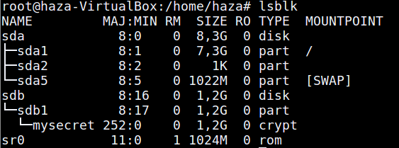

Pengertian Encrypt :
Encrypt adalah proses mengamankan suatu informasi dengan membuat informasi tersebut tidak dapat dibaca tanpa bantuan pengetahuan khusus. Dikarenakan enkripsi telah digunakan untuk mengamankan komunikasi di berbagai negara, hanya organisasi-organisasi tertentu dan individu yang memiliki kepentingan yang sangat mendesak akan kerahasiaan yang menggunakan enkripsi. Di pertengahan tahun 1970-an, enkripsi kuat dimanfaatkan untuk pengamanan oleh sekretariat agen pemerintah Amerika Serikat pada domain publik, dan saat ini enkripsi telah digunakan pada sistem secara luas, seperti Internet e-commerce, jaringan Telepon bergerak dan ATM pada bank.
Beberapa Configure Encrypt :
Mengecek Encrypt :
$ sudo grep -i config_dm_crypt /boot/config-$(uname -r)
pengecekan ini bertujuan apakah computer yang kita gunakan support dengan Encrypt.
Menginstall Encrypt :
$ sudo apt-get install cryptsetup
Setelah itu kalian pilih partisi mana yang akan kalian encrypt.
Membuat Encrypt :
$ sudo cryptsetup -y luksFormat /dev/sdb1
Saya disini menggunakan pertisi sdb1 untuk di encrypt.Setelah itu kalian tulis "YES".
Lalu masukkan password anda,akan tetapi perlu diingat sistem tidak akan menerima password yang simple.
Membuka Encrypt :
$ sudo cryptsetup luksOpen /dev/sdb1 mysecret
anda jangan terpaku dengan nama setelah /sdb1 dikarenakan itu hanya penamaan saja jadi kalian bebas menamakannya.
lalu masukkan password yang kalian buat tadi.
Mengecek Encrypt :
$ lsblk
Jika berhasil maka akan ada perubahan seperti berikut :
Mengubah file system :
$ sudo mkfs -t ext4 /dev/mapper/mysecret
Memount Encrypt partisi :
$ sudo mount /dev/mapper/mysecret
lalu dicek kembali dengan lsblk atau df -h
Mengunci Encrypt :
Sebelum kita mengunci kita harus mengumount terlebih dahulu :
$ sudo umount /dev/mapper/mysecret
lalu kita akan menguncinya :
$ sudo cryptsetup luksClose /dev/sdb1 mysecret
Semoga berhasil mencoba kawan.jika terjadi error atau hal lain maka bisa chat dengan admin lewat medsos dibawah.